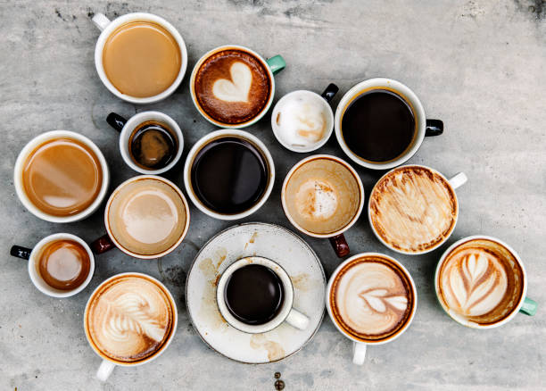

What is Coffee?
Coffee is a beverage brewed from roasted seeds of the Coffea plant. It has a long cultural history, with origins traced to East Africa and a global spread that shaped local rituals and economies.
Benefits often cited in moderation include increased alertness and antioxidants.
Coffee isn’t just a morning ritual — it’s a drink packed with antioxidants and mental health benefits when enjoyed in moderation.
Coffee is one of the world’s most loved beverages, offering more than just an energy boost. Studies have shown that moderate coffee consumption can enhance focus, mood, and even long-term health. Let’s explore some of its key benefits.
Remember: balance is key! Enjoy your coffee in moderation and explore different coffee types and brewing methods to get the most flavor and benefits.